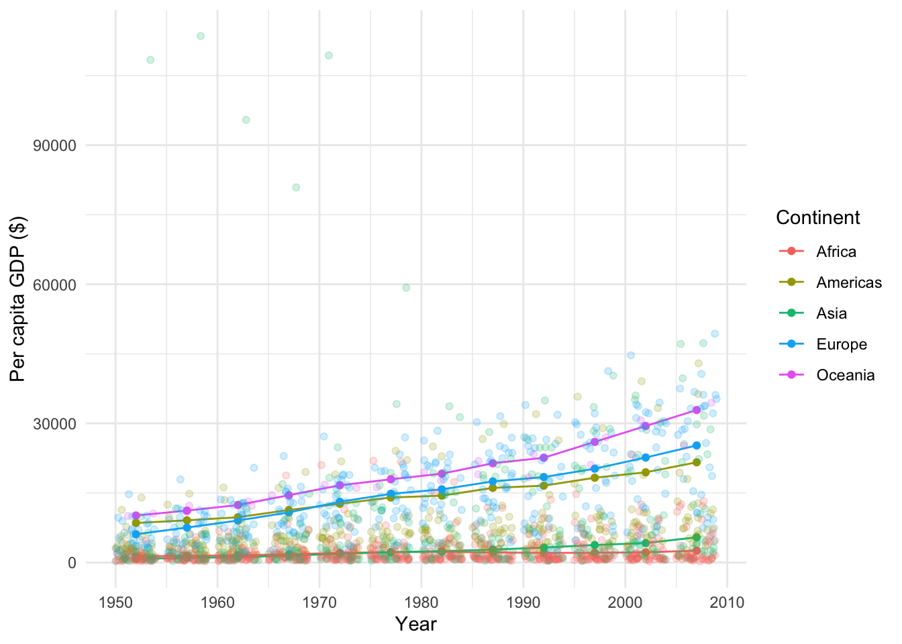
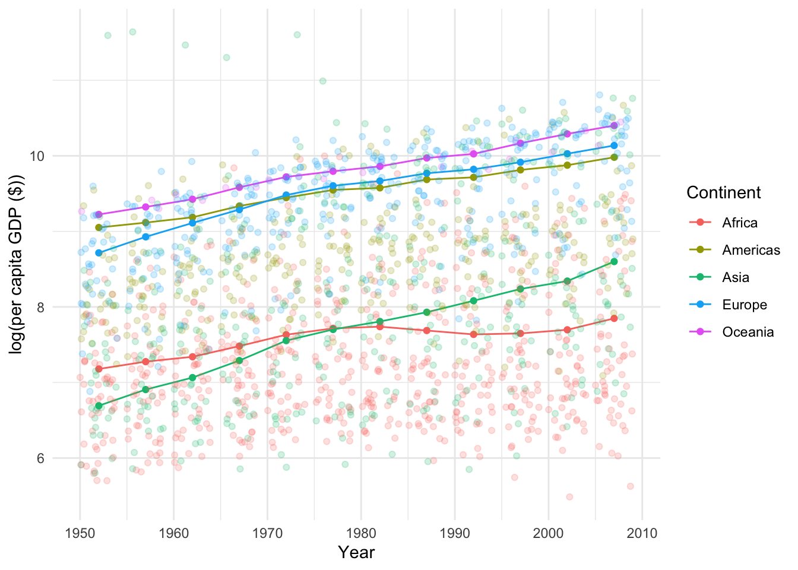
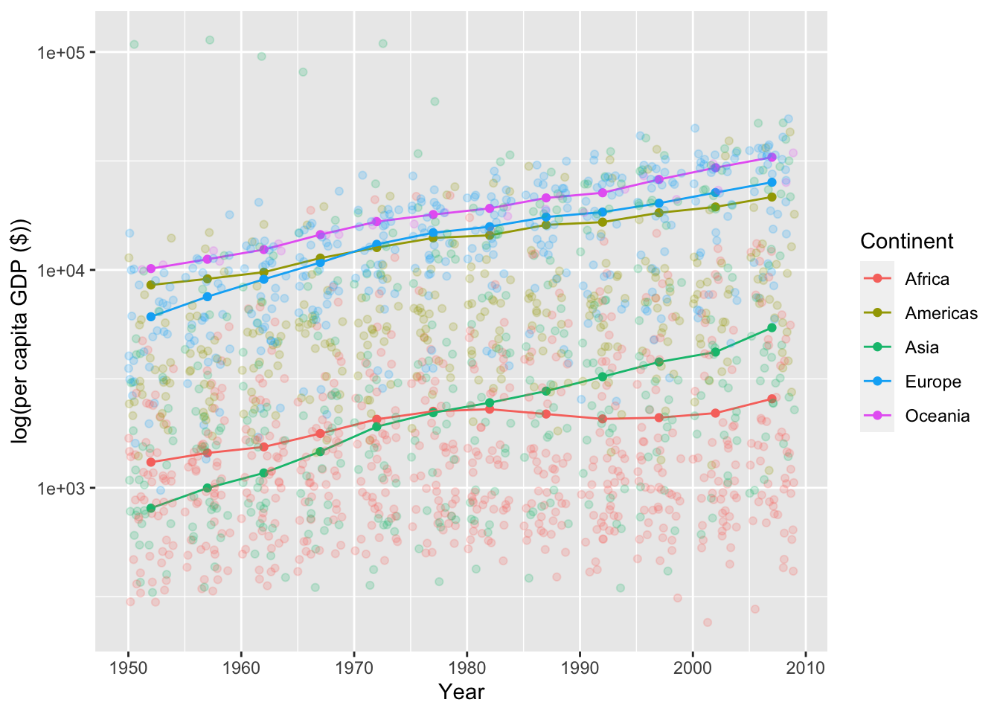

# A tibble: 1,704 × 6
country continent year lifeExp pop gdpPercap
<fct> <fct> <int> <dbl> <int> <dbl>
1 Afghanistan Asia 1952 28.8 8425333 779.
2 Afghanistan Asia 1957 30.3 9240934 821.
3 Afghanistan Asia 1962 32.0 10267083 853.
4 Afghanistan Asia 1967 34.0 11537966 836.
5 Afghanistan Asia 1972 36.1 13079460 740.
6 Afghanistan Asia 1977 38.4 14880372 786.
7 Afghanistan Asia 1982 39.9 12881816 978.
8 Afghanistan Asia 1987 40.8 13867957 852.
9 Afghanistan Asia 1992 41.7 16317921 649.
10 Afghanistan Asia 1997 41.8 22227415 635.
# ℹ 1,694 more rows
Instructions
Try on your own:
In your github account, create a new repository called, “lab1_practice”, then clone it to your laptopIn the new R project:
Create a new Quarto document. If you like, set up the header for code folding. set echo, message, and warning like we did in lab.
Attach tidyverse and the gapminder package (you might need to install gapminder)
For each year and continent, summarize the average per-capita GDP across all countries in the continent. Hint: don’t just average the country-level values - need to consider country populations!
Plot the continent- level GDP values in a scatter plot. Bonus, plot the country level values as well, with a low alpha to fade them into the background.
Redo the scatter plot but this times, log transform the GDP data (either in the dataframe using the ‘mutate’, or on the plot with ‘scale_y_log10()’)
Based on the plots, choose either regular or log transformed data, and use a linear regression to estimate annual change in per capita GDP or log(per capita GDP) accounting for continent.
Write a sentence or two describing the trends in the plots.
Write a sentence or two to explain the cooefficients in the linear model, including statistical significance.
Which continent is the “reference” continent? why might that be?
What do the coefficients on each continent represent? Do these make intuitive sense?
Does a linear model seem like a good way to approach these data? why or why not?
When done, render your Quarto doc, then stage, commit, and push back to Github. Congrats, you did it!
Analysis Part 1
For each year and continent, summarize the average per-capita GDP across all countries in the continent. Hint: don’t just average the country-level values - need to consider country populations!
ggplot(continent_mean_gdp, aes(x = year, y = mean_gdp, color = continent)) +## continents as points:geom_point() +## and/or continenents as lines:geom_line()+## use original data to show countries, still by year and continent, ## using alpha to fade the points relative to the main points## geom_jitter shuffles them a little so points don't stack on top of one anothergeom_jitter(data = gapminder, aes(y=gdpPercap), alpha = .2) +theme_minimal()+labs(x ="Year", y ="Per capita GDP ($)", color ="Continent")

Plot log-transformed data
Ways to plot transformed data:
Log-transformed data in the dataframe (as Casey did it)
Log-transformed on the fly (as is the code provided)
Don’t transform, but use log - scaled axis (see next chunk)
Log-transformed in data frame and on the fly
Code
ggplot(continent_mean_gdp, aes(x = year, y = log_mean_gdp, color = continent)) +geom_point() +geom_line() +#note, log-transforming on the fly for our y axis here!geom_jitter(data = gapminder, aes(y =log(gdpPercap)), alpha = .2)+theme_minimal() +labs (x ="Year", y="log(per capita GDP ($))", color ="Continent")

Plot untransformed data but on logarithmic axis
Code
ggplot(continent_mean_gdp, aes(x = year, y = mean_gdp, color = continent)) +geom_point() +geom_line() +geom_jitter(data = gapminder, aes(y = gdpPercap), alpha = .2) +labs(x ="Year", y ="log(per capita GDP ($))", color ="Continent") +scale_y_log10()

Note: log(mean_gdp) is te natural log (base e) while scale_y_log10() is the log10 or base 10. So the y axis numbers will be different, even if the shape is the same!
Analysis Part 2
Answers may vary depending on choice of log - transformed or untransformed data. Casey’s examples show both
Untransformed
Code
gdp_lm <-lm(mean_gdp ~ year + continent, data = continent_mean_gdp)summary(gdp_lm)
Call:
lm(formula = mean_gdp ~ year + continent, data = continent_mean_gdp)
Residuals:
Min 1Q Median 3Q Max
-5237.2 -1723.3 -19.9 1436.2 7541.5
Coefficients:
Estimate Std. Error t value Pr(>|t|)
(Intercept) -416647.4 40184.9 -10.37 1.87e-14 ***
year 211.5 20.3 10.42 1.56e-14 ***
continentAmericas 12334.3 1107.8 11.13 1.33e-15 ***
continentAsia 554.4 1107.8 0.50 0.619
continentEurope 13119.1 1107.8 11.84 < 2e-16 ***
continentOceania 17544.9 1107.8 15.84 < 2e-16 ***
---
Signif. codes: 0 '***' 0.001 '**' 0.01 '*' 0.05 '.' 0.1 ' ' 1
Residual standard error: 2714 on 54 degrees of freedom
Multiple R-squared: 0.9061, Adjusted R-squared: 0.8974
F-statistic: 104.2 on 5 and 54 DF, p-value: < 2.2e-16
Trends: In both plots, we see most continents on average have increasing values. Here we’ll look at coefficients for both models.
Coefficients (non-transformed):
Year: This coefficient indicates that on average, across all continents, per capita GDP is increasing by 211.48 per year.
The continent coefficients show how much greater, on average, per capita GDP is for each continent (shift in the intercept), relative to a baseline of Africa (which is baseline in this case because it is alphabetically first)
The intercept would be the predicted per capita GDP (if our model is accurate) at year zero. Obviously our model breaks down somewhere along the way…
Coefficients (log-transformed):
Year: on average, this shows that log(per cap gdp) is increasing by 0.021 per year. Through the magic of logarithms, the slope here indicates growth rate, so this indicates an average growth rate of per-cap GDP of about 2.1%.
As for the non-transformed, the continent coefficients show a shift in the intercept, which still means a difference in GDP of a continent relative to Africa’s, though here log-transformed.
Our intercept again shows the (log-transformed) predicted income at year zero.
Because GDP growth is most likely exponential over time, the log-transformed model is theoretically a better choice. Because the slopes are (relatively) similar, it shows that per cap GDP growth is pretty consistent across continents (except Africa), even if the starting points are different. In either case, we know that any predictions we make with our model should be limited to a fairly narrow time frame - certainly not 2000 years, but maybe 20-30 years.